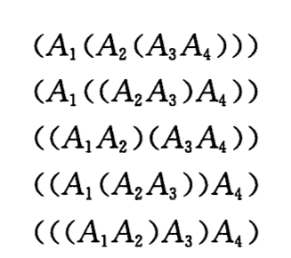
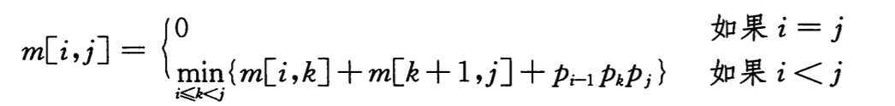

动态规划：矩阵链相乘
目录
动态规划：矩阵链相乘
本文介绍用动态规划的方法求解矩阵链相乘问题。
*矩阵链乘法问题*可以描述为：给定 n 个矩阵的链，矩阵 Ai 的规模为 P(i-1) * p(i)， 求完全括号化方案，使得计算乘积 A1, A2 … An 所需表量乘法次数最少。 *完全括号化*可以描述为：是一个单一的矩阵，或者是两个完全括号化的矩阵乘积链的积，且已外加括号。如下，矩阵链，一共有 5 种完全括号化方案。

对矩阵链加括号会对乘积运算的代价产生巨大的影响，加括号的顺序不同，造成结果可能会相差 10 倍。还要注意，只有两个矩阵相容的时候，即 A 的列数等于 B 的行数，才能够相乘。
用穷举法解矩阵链相乘的的渐进运行时间会与 n 呈指数关系，所以我们用上一篇动态规划上中介绍的 4 个步骤来解决问题。
步骤 1：最优括号化方案的结构特征
动态规划的第一步就是寻找最优子结构，然后就可以使用这种子结构从子问题的最优解构造出原问题的最优解。假设 A(i)A(i+1)…A(j)的最优括号化方案的分割点在 A(k)和 A(k+1)之间。那么，继续对其前缀子链 A(i)…A(k)进行划分时，可以直接采用独立求解它时所得到的最优方案。换句话说，就是一个非平凡的矩阵链乘法问题实例的任何解都需要划分，而任何最优解都是由子问题的最优解构成的。所以，求解一个矩阵链乘法问题时，我们可以将问题划分为两个子问题，求出子问题的最优解，然后将子问题的最优解组合起来。我们必须保证在确定分割点时，考察了所有可能的划分点。
步骤 2：一个递归求解方案
令表 p 保存矩阵链的规模，m[i][j]表示计算矩阵 A(i, j)所需乘法次数的最少值，k为最优括号化方案的分割点，令 s[i][j]保存分割点位置 k。根据矩阵乘法公式，我们可以得到：
m[i][j] = m[i][k] + m[k+1][j] + p(i-1)p(k)p(j)
上面的公式假设 k 是已知的，虽然实际上我们并不知道，但是可以遍历 k 的 j-i 种可能，就一定能得到最优分割点 k。因此递归公式变为：

步骤 3：计算最优代价
采用自底向上的方法求解问题。首先，我们必须确定求解的顺序，在计算 m[i][j]时，需要访问哪些表项。上面的公式显示，最优代价 m[i][j]只依赖于那些少于 j-i+1 个矩阵相乘的最优代价。所以，算法应该按长度递增的顺序求解问题，并按对应顺序填写表 m。具体的计算见下文的完整代码。
步骤 4：构造最优解
利用表 s 保存的最优切割点，我们可以还原、构造出最优解。递归的将表 s 进行展开，就可以重构出最优解。具体实现见下文代码。
作为例子的矩阵链为：
 （图片丢失）
（图片丢失）
完整的 C 语言代码为（为了计算方便，使矩阵的行列下表从 1 开始）：
#include <stdlib.h> #include <stdio.h> void matrix_chain_order(int *p, int m[7][7], int s[7][7]) { /* * 计算最优代价 */ int i, j, k, l, n, q; //l为矩阵链长度 n = sizeof(p) / sizeof(char) - 2; //n为矩阵个数 for (i = 1; i <= n; i++) //计算矩阵链长度为1时的m m[i][i] = 0; for (l = 2; l <= n; l++) { //循环计算矩阵链长度大于1时的m for (i = 1; i <= n - l + 1; i++) { j = i + l - 1; m[i][j] = 65535; for (k = i; k <= j - 1; k++) { //遍历寻找最优切割点 q = m[i][k] + m[k + 1][j] + p[i - 1] * p[k]* p[j]; //矩阵乘法公式 if (q < m[i][j]) { m[i][j] = q; s[i][j] = k; } } } } } void print_optimal_parens(int s[7][7], int i, int j) { /* * 重构最优解 */ if (i == j) printf("A%d", i); else { printf("("); print_optimal_parens(s, i, s[i][j]); print_optimal_parens(s, s[i][j] + 1, j); printf(")"); } } int main(int argc, const char *argv[]) { int p[7] = {30, 35, 15, 5, 10, 20, 25}; int m[7][7] = {0}; int s[7][7] = {0}; int i, j; matrix_chain_order(p, m, s); printf("table m:\n"); for (i = 1; i < 7; i++) { for (j = 1; j < 7; j++) printf("%5d ", m[i][j]); printf("\n"); } printf("\n矩阵链A1...A6所需的最少乘法次数为： %d\n", m[1][6]); printf("最优解为："); print_optimal_parens(s, 1, 6); printf("\n"); return 0; }
动态规划的关键是分析其最优子结构和如果利用最优子结构求解问题，与前文的算法不同，没有一个固定的方法求解，不过动态规划也不限于一个固定的问题。另外在本例中如何处理数组下表来简化计算也很重要。